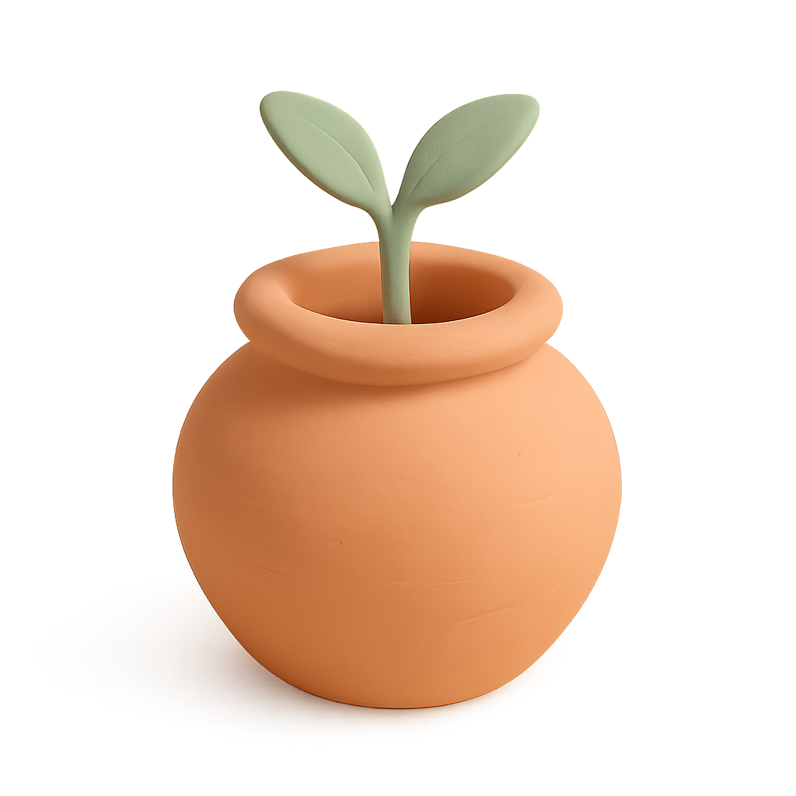
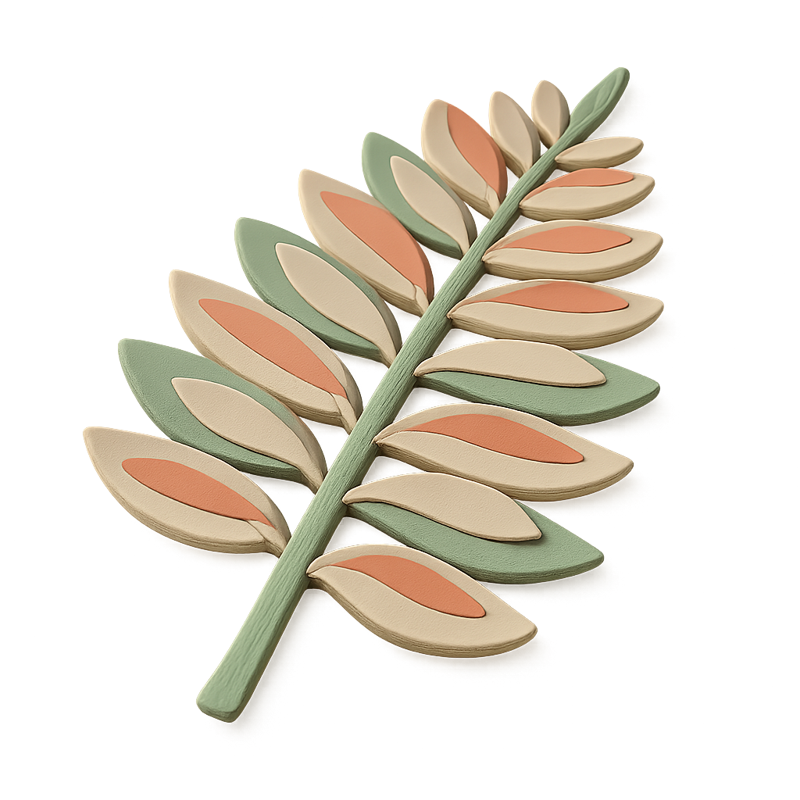

菜友集市
周末菜友大会 · 5 月 24 日 11:00–14:30 · 📍 Tushita Farm

红根菠菜

Cherokee purple tomato · 大黑番茄苗

短叶十三号早萝卜

特大萝卜

贵妃南瓜 · pack of 6
求 3
查看全部 →寻 · 韭菜根 / 韭菜籽
寻 · 紫苏苗（赤紫色）
Demo notes (would not ship in production):
• Cluster 1 (Matte Clay 3D Botanical Diorama) chrome applied to pdx-gardener.
• Real production data from
• Polymer-clay assets used as chrome decoration only: hero icon (1×), section head icons (2×), empty-state thumb substitute (when user has no uploaded photo).
• User-uploaded photos completely untouched: no filter, no overlay, no AI replacement.
• Discipline correction from
• Layout invariants preserved: ≥44×44 touch targets, flex-row 80×80 thumb cards, color-semantic tags (free/paid/barter), section ordering.
• Cluster 1 (Matte Clay 3D Botanical Diorama) chrome applied to pdx-gardener.
• Real production data from
/api/market + /api/wants; user photos hot-linked from pdxgardener.com/api/media/<id>/thumb.• Polymer-clay assets used as chrome decoration only: hero icon (1×), section head icons (2×), empty-state thumb substitute (when user has no uploaded photo).
• User-uploaded photos completely untouched: no filter, no overlay, no AI replacement.
• Discipline correction from
pdx-apply-c3: H1 stays sans (not display serif); cards stay warm cream (not clinical white); owner names stay plain sans (not 楷体 exoticization); zero italic festival.• Layout invariants preserved: ≥44×44 touch targets, flex-row 80×80 thumb cards, color-semantic tags (free/paid/barter), section ordering.